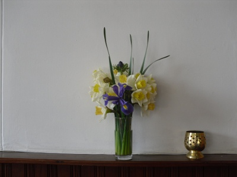

Prayers
Lord’s Prayer
Our Father,
who art in heaven,
hallowed be thy name;
thy kingdom come,
thy will be done;
on earth as it is in heaven.
Give us this day our daily bread;
and forgive us our trespasses,
as we forgive those
who trespass against us.
And lead us not into temptation,
but deliver us from evil.
For thine is the kingdom,
the power and the glory,
for ever and ever. Amen.
Spiritual Writer – Julian of Norwich
In 1373 a woman from Norwich, whose name was not recorded and who was gravely ill, experienced a series of sixteen visions which revealed to her the love of God. After she recovered she spent many years reflecting on her visions and finally recorded her conclusions that Love was our Lord’s meaning in her book ‘Revelations of Devine Love’. During her life she became an anchoress to the Church of Saint Julian in Norwich, from which she became known. She died around 1417.
A Prayer of Julian of Norwich
In you, Father all-mighty, we have our preservation and our bliss.
In you, Christ, we have our restoring and our saving.
You are our mother, brother and Saviour.
In you, our Lord the Holy Spirit, is marvelous and plenteous grace.
You are our clothing; for love you wrap us and embrace us.
You are our maker, our lover, our keeper.
Teach us to believe that by your grace all shall be well, and all shall be well,
And all manner of things shall be well. Amen.
